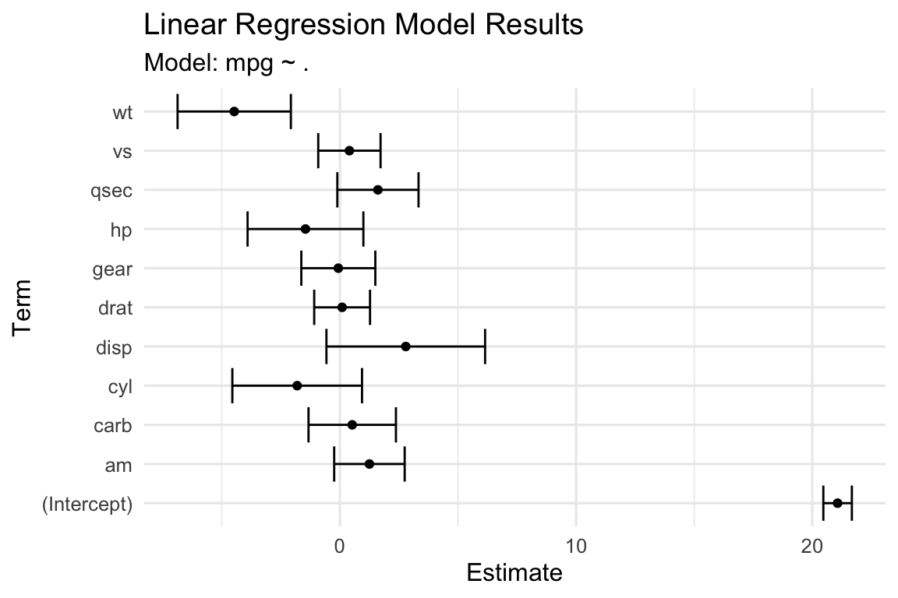
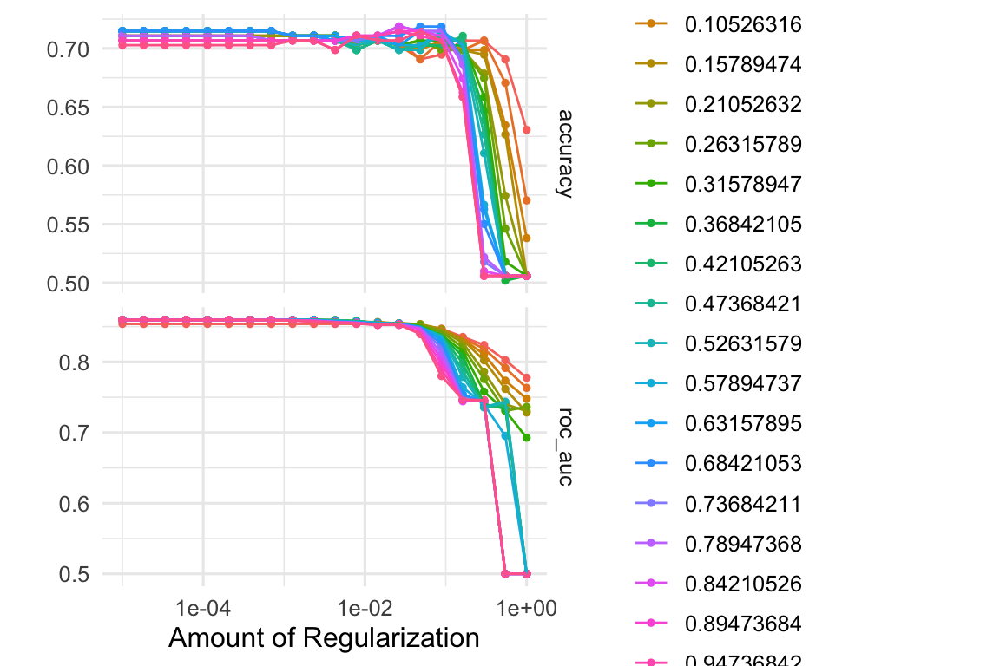

Overview of Tidy Models for Supervised Machine Learning
Author
JMG
Learning Objectives
After this lesson, students will be able to
understand and utilize the tidymodels framework for supervised machine learning.
Overview
Machine learning (ML) as we have defined it involves estimating a (mathematical) function and we divide problems into two general types: supervised and unsupervised learning. In supervised learning, we have a set of data that we use to train a model to predict a target variable. In unsupervised learning, we have a set of data that we use to train a model to find patterns in the data. In this chapter, we will focus on supervised learning. Further, we separate supervised learning into two types: regression and classification. In regression, the target variable is continuous. In classification, the target variable is categorical. We also consider two types of applications for machine learning: prediction and inference. In prediction, we are interested in predicting the target variable. In inference, we are interested in understanding the relationship between the target variable and the predictors.
The tidymodels Machine Learning Workflow
The tidymodels framework provides a consistent set of steps for training and evaluating machine learning models. The following is a list of the steps in the tidymodels workflow:
Data Preparation:
Load and prepare your data set following tidy data principles.
Data Splitting:
Use the rsample package to create data splits for training and testing.
Preprocessing and Feature Engineering:
Define a data preprocessing plan using the recipes package.
Create a “recipe” for data cleaning, transformation, and feature engineering.
Model Specification:
Specify machine learning models with the parsnip package.
Choose from a variety of models for regression, classification, etc.
Hyperparameter Tuning:
Utilize the tune package for hyperparameter tuning.
Define a grid of hyperparameters and use resampling methods for evaluation.
Model Training:
Train models with the specified data splits, preprocessing plan, and hyperparameters.
Use the fit function to train on the training data.
Model Evaluation:
Assess model performance using the yardstick package.
The tidymodels package in R is an integrated ecosystem of packages designed to streamline the process of creating, evaluating, and deploying machine learning models while adhering to tidy data principles. The tidymodels framework follows a structured and consistent approach to machine learning, making it easier for data scientists and analysts to work with data and build predictive models. Here’s a brief description of the key components of the tidymodels package:
Description: tidymodels seamlessly integrates with the popular tidyverse suite of packages, allowing for the use of tidy data frames and other tidy tools.
Description: The recipes package provides a systematic way to define and preprocess feature engineering steps for your data, creating a “recipe” that includes data preprocessing and variable transformations.
Description: The parsnip package defines a common interface for specifying machine learning models, making it easier to work with different modeling engines.
Description: The workflows package simplifies the process of building, tuning, and evaluating models by combining models, recipes, and tuning into a unified workflow.
Description: The tune package offers tools for hyperparameter tuning, allowing you to optimize model performance by systematically searching for the best hyperparameters.
Description: The yardstick package provides a wide range of functions for model evaluation, including metrics for classification, regression, and survival analysis tasks.
Description: The broom package helps tidy up the results of model fits, making it easy to extract coefficients, predictions, and other model-related information in a tidy data format.
Community and Extensibility:
Description: The tidymodels ecosystem has a growing community of users and contributors. It supports the creation of custom modeling engines, extending the framework to new algorithms.
Reproducibility and Best Practices:
Description: tidymodels promotes best practices in machine learning, emphasizing tidy data principles, clear model specification, and reproducibility.
Basic Models
Here we provide lists of the most common supervised machine learning models. Remember that the choice of the machine learning model depends on the specific problem, the nature of the data, and the trade-off between interpretability and predictive performance. It’s often a good practice to experiment with multiple models and evaluate their performance to select the most suitable one for a given task.
Summary and Characteristics of Common Supervised Machine Learning Models
Summary: Linear regression models the relationship between a dependent variable and one or more independent variables by fitting a linear equation to the observed data.
Characteristics:
Suitable for regression tasks (predicting continuous numeric values).
Assumes a linear relationship between predictors and the target.
Summary: Decision trees divide the data into subsets based on the most significant attributes, making them suitable for both classification and regression tasks.
Summary: Ensemble methods combine multiple base models to improve predictive performance.
Characteristics:
Include bagging (e.g., Random Forest), boosting (e.g., AdaBoost), and stacking.
Often more robust and accurate than individual models.
Handle various types of data and tasks.
Model Specifications using parsnip
The parsnip package in the tidymodels family allows one to specify a variety of supervised machine learning models. Here is a list of some of the parsnip models:
Description: The R brulee package contains several basic modeling functions that use the torch package infrastructure, such as: linear regression, logistic regression, and neural networks.
Note: Some of the model specifications in parsnip are wrappers for other packages and you will need to have those packages installed for everything to work. Make sure to refer to the the parsnip documentation. before fitting models.
Some Examples
We’ve already seen examples of utilizing the tidymodels framework for nearest neighbors, let’s examine some further examples.
Example 1: tidymodels Workflow for Linear Regression for Predictive Modeling
The following is an example of the tidymodels workflow for linear regression for predictive modeling. The example uses the mtcars dataset and the parsnip and recipes packages. The example is adapted from the Tidy Modeling with R book (Kuhn and Silge 2022).
Show the code
# set seed for reproducibilityset.seed(123)# load the mtcars datasetdata(mtcars)# create a training and testing splitmtcars_split <-initial_split(mtcars, prop =0.75)# create a training and testing datasetmtcars_train <-training(mtcars_split)mtcars_test <-testing(mtcars_split)# create a recipe for preprocessingmtcars_recipe <-recipe(mpg ~ ., data = mtcars_train) %>%step_center(all_predictors()) %>%step_scale(all_predictors())# create a linear regression modellm_spec <-linear_reg() %>%set_engine("lm")# fit the modellm_fit <-workflow() %>%add_recipe(mtcars_recipe) %>%add_model(lm_spec) %>%fit(data = mtcars_train)# make predictionslm_pred <-predict(lm_fit, mtcars_test) %>%bind_cols(mtcars_test)# evaluate the modellm_eval <- lm_pred %>%metrics(truth = mpg, estimate = .pred) %>%bind_rows( lm_pred %>%rsq(truth = mpg, estimate = .pred) %>%mutate(metric ="rsq") )# tidy the model resultslm_tidy <-tidy(lm_fit)# visualize the model resultslm_tidy %>%ggplot(aes(x = term, y = estimate)) +geom_point() +geom_errorbar(aes(ymin = estimate - std.error, ymax = estimate + std.error)) +coord_flip() +labs(title ="Linear Regression Model Results",subtitle ="Model: mpg ~ .",x ="Term",y ="Estimate" )

Figure 1: Tidy Models Workflow for Regression
Table 1: Linear Regression Model Results
term
estimate
std.error
statistic
p.value
(Intercept)
21.0708333
0.6035556
34.9111701
0.0000000
cyl
-1.8085954
2.7450923
-0.6588469
0.5214933
disp
2.7886147
3.3586784
0.8302714
0.4213717
hp
-1.4572830
2.4512678
-0.5945018
0.5623810
drat
0.0941833
1.1813897
0.0797225
0.9376722
wt
-4.4737683
2.3983919
-1.8653200
0.0848621
qsec
1.6098052
1.7188679
0.9365497
0.3660636
vs
0.4021956
1.3188879
0.3049506
0.7652312
am
1.2501668
1.4919647
0.8379332
0.4172084
gear
-0.0667576
1.5665234
-0.0426151
0.9666559
carb
0.5220534
1.8506869
0.2820863
0.7823182
Table 2: Linear Regression Model Evaluation
.metric
.estimator
.estimate
rmse
standard
2.4214858
rsq
standard
0.7487043
mae
standard
2.0481386
rsq
standard
0.7487043
Example 2: tidymodels Workflow for Linear Regression for Inferential Modeling
The following is an example of the tidymodels workflow for linear regression for inferential modeling. The example uses the mtcars dataset and the parsnip and recipes packages.
Show the code
# set seed for reproducibilityset.seed(123)# load the mtcars datasetdata(mtcars)# create bootstrap samplesmtcars_boot <-reg_intervals(mpg ~ disp + cyl + wt + am, data = mtcars,model_fn ="lm",type ="percentile",keep_reps =TRUE)mtcars_boot %>%select(term, .replicates) %>%unnest(cols = .replicates) %>%ggplot(aes(x = estimate)) +geom_histogram(bins =30,color="white",fill="lightblue") +facet_wrap(~ term, scales ="free_x") +geom_vline(data = mtcars_boot, aes(xintercept = .lower), col ="purple") +geom_vline(data = mtcars_boot, aes(xintercept = .upper), col ="purple") +geom_vline(xintercept =0, col ="black",linetype="dashed")
Figure 2: Tidy Models Workflow for Regression
Example 3: tidymodels Workflow for Tuning Random Forest for Regression
The following is an example of the tidymodels workflow for tuning random forest for regression. The example uses the mtcars dataset and the parsnip and recipes packages.
Show the code
# set seed for reproducibilityset.seed(123)# load the mtcars datasetdata(mtcars)# create a training and testing splitmtcars_split <-initial_split(mtcars, prop =0.75)# create a training and testing datasetmtcars_train <-training(mtcars_split)mtcars_test <-testing(mtcars_split)# create a cross-validation setmtcars_cv <-vfold_cv(mtcars_train, v =5)# create a recipe for preprocessingmtcars_recipe <-recipe(mpg ~ ., data = mtcars_train)# create a random forest modelrf_spec <-rand_forest(mtry =tune(),trees =1000,min_n =tune()) %>%set_mode("regression") %>%set_engine("ranger")# create a workflowtune_wf <-workflow() %>%add_recipe(mtcars_recipe) %>%add_model(rf_spec)# create tuning gridrf_grid <-grid_regular(mtry(range =c(3, 11)),min_n(),levels =15)# tune the modeltune_res <-tune_grid( tune_wf,resamples = mtcars_cv,grid = rf_grid)# visualize the tuning resultstune_res %>%collect_metrics() %>%filter(.metric =="rmse") %>%mutate(min_n =factor(min_n)) %>%ggplot(aes(mtry, mean, color = min_n)) +geom_line(alpha =0.5, size =1.5) +geom_point() +labs(y ="RMSE")
Figure 3: Tidy Models Workflow for Random Forest
Now we will select a final model based on the tuning results.
Figure 4: Results on Test Set for Tuned Random Forest for Regression
Example 4: tidymodels Workflow for Classification with Multinomial Logistic Regression
The following is an example of the tidymodels workflow for multinomial logistic regression. The example uses the penguins dataset and the parsnip and recipes packages.
Show the code
# set seed for reproducibilityset.seed(123)# load the penguins datasetdata(penguins)# remove missing values from the datasetpenguins <- penguins %>%drop_na()# create a training and testing splitpenguins_split <-initial_split(penguins, prop =0.75)# create a training and testing datasetpenguins_train <-training(penguins_split)penguins_test <-testing(penguins_split)# create a cross-validation setpenguins_cv <-vfold_cv(penguins_train, v =5)# create a recipe for preprocessingpenguins_recipe <-recipe(island ~ bill_length_mm + bill_depth_mm + flipper_length_mm + body_mass_g, data = penguins_train)# create a multinomial logistic regression modellogit_spec <-multinom_reg(penalty =tune(), mixture =tune()) %>%set_engine("glmnet") %>%set_mode("classification")# create a workflownber_wf <-workflow(penguins_recipe, logit_spec)# create grid for tuningnber_grid <-grid_regular(penalty(range =c(-5, 0)), mixture(range =c(0, 1)),levels =20)# tune the modelnber_rs <-tune_grid( nber_wf, penguins_cv,grid = nber_grid )autoplot(nber_rs)

Figure 5: Tidy Models Workflow for Multinomial Logistic Regression